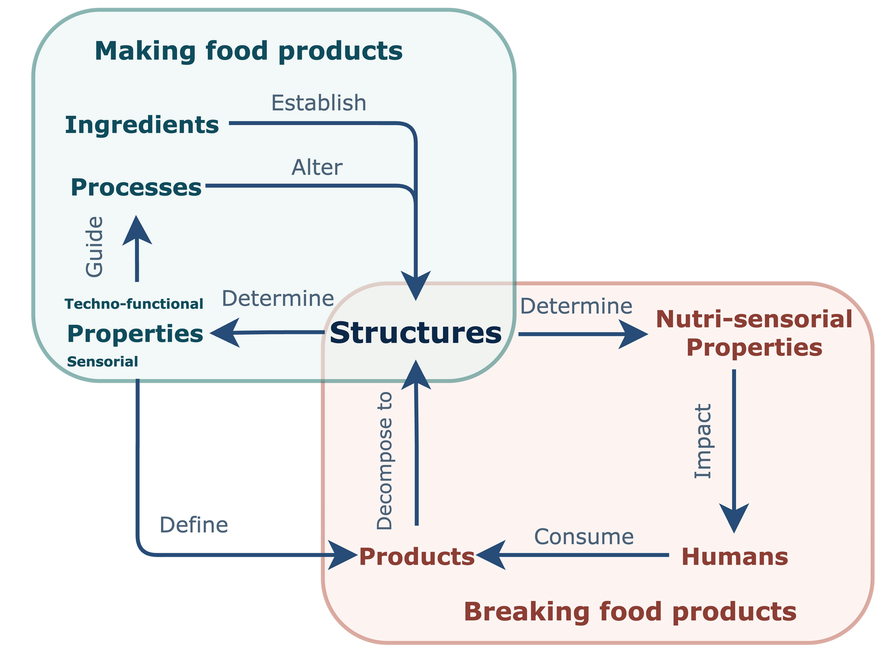

Making and breaking
Structure as the central relation connecting food production and consumption
Food production differs from manufacturing fields where quality is commonly defined through durability and sustained functional performance. Making food is for breaking food.
Food is ultimately designed to be broken into nutrients and sometimes anti-nutrients during human consumption.
Biomass derived from plants and animals provides the foundation for most food ingredients and formulated products. Processing transforms these ingredients into structures, while each structure carries techno-functional properties that can guide subsequent processing decisions. Human perception measures the resulting functionality differently because sensorial properties ultimately define the identity of a food product.
The second cycle begins when consumption decomposes food products into new structures within the mouth, stomach, and intestine. These structures determine nutritional and sensorial properties, which influence human well-being and may induce further structural changes during digestion. Making and breaking are therefore connected cycles in which structure mediates both product performance and physiological consequence.
Diagram 1 · Structure-function cycles in food
Making ↔ structure ↔ breaking
The combinatorial challenge
Structure-function pairs form an expanding space
Food science research has focused strongly on experimentally characterizing structure-function pairs because foods contain many structural scales and many corresponding functions.
Processing can readily create additional pairs within each system, while diverse cooking methods expand the experimental space toward an problem.
Food engineers examine how processing changes structure-function pairs, whereas food biochemists examine how consumption and digestive behaviour reshapes these pairs.
This expanding space remains challenging to characterize because each ingredient, process, structure, and behaviour can generate additional combinations.